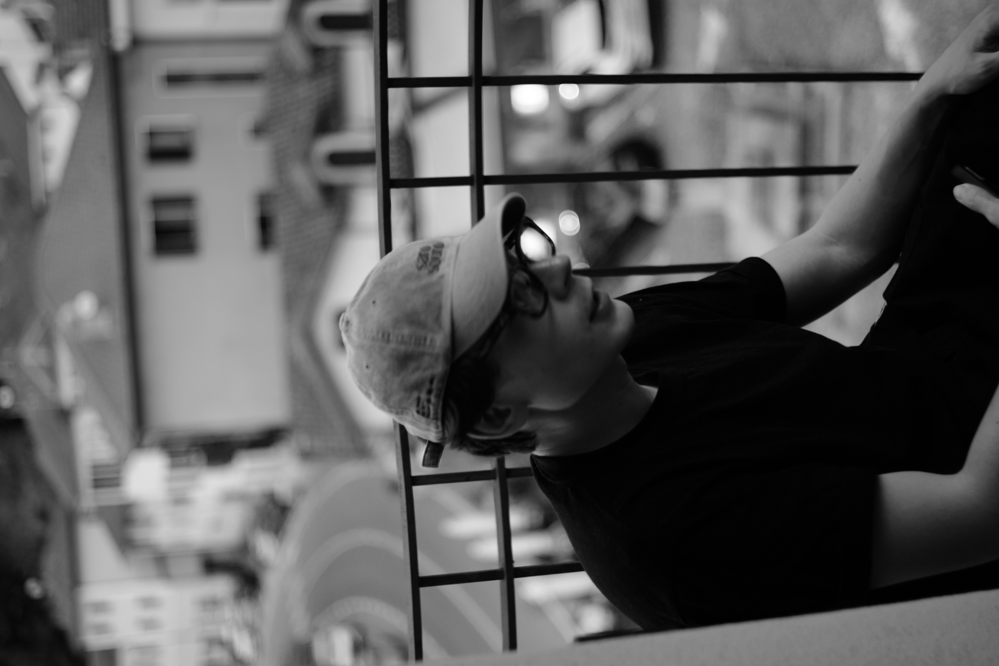
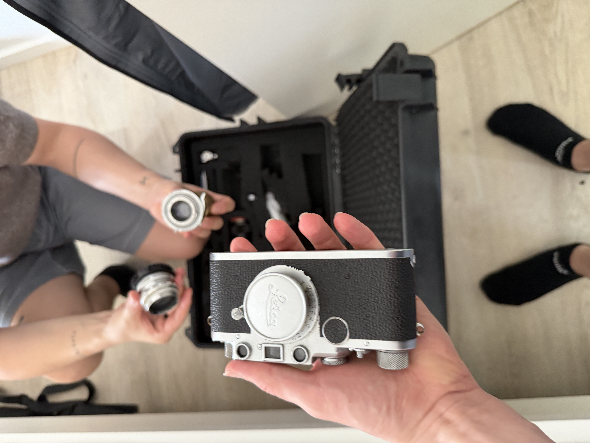
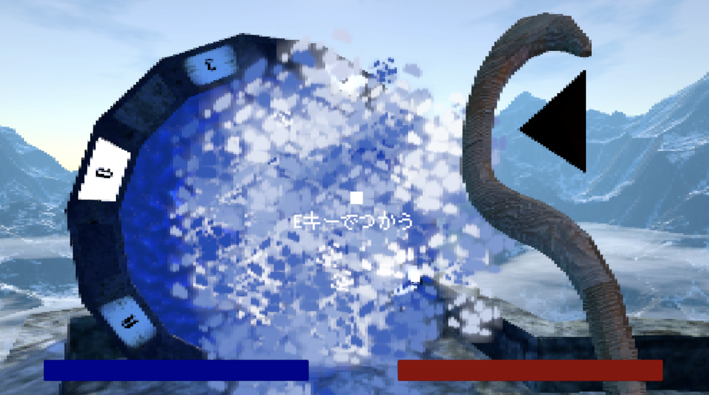
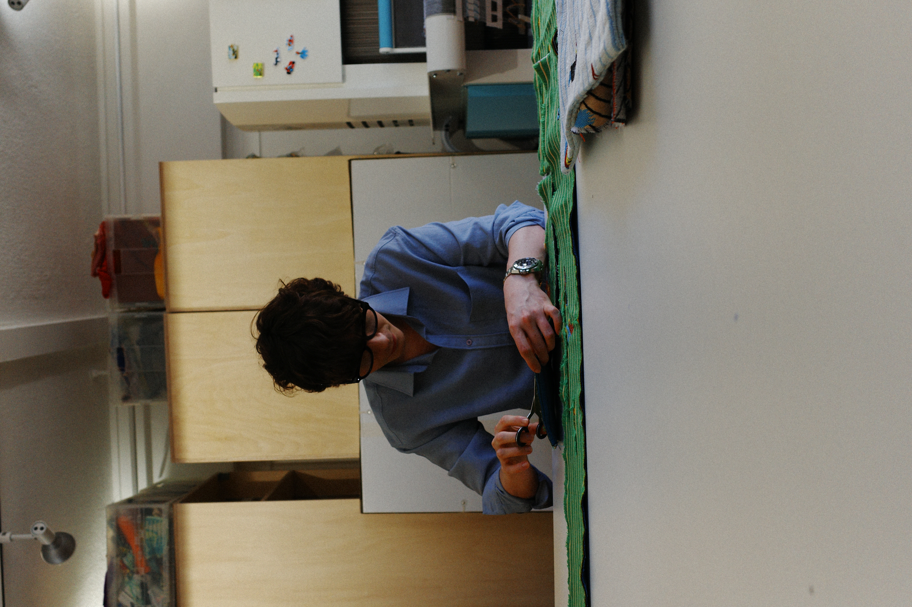
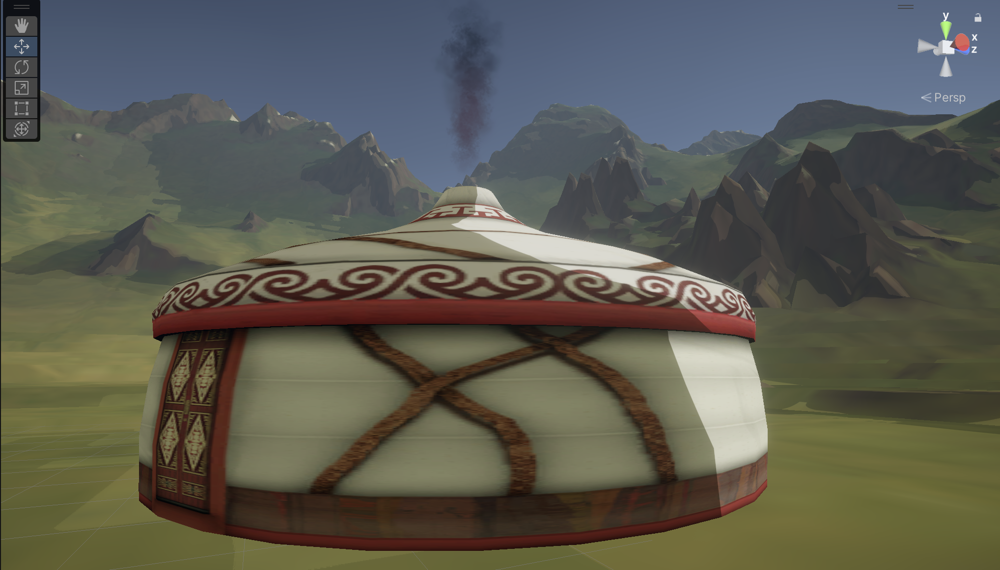

Games, from start to finish. Where I come from, how I work, and where I’m going.
View my workI grew up in a small town in Germany, where young people have few opportunities and many leave. I wanted to build a future rather than watch the town fade, and that pushed me to look further.
Growing up on anime, I fell in love with Japanese culture and history. Living in Japan and one day contributing something back has been a dream for a long time. Game development is where my technical skills and creativity meet, so that is the path I’m building.

I’m not only a programmer. My brother is an artist, and since I was a child he has taught me 3D software, photography and editing. Because of him I care not just about making things move, but about making them look beautiful.
I work across systems, design and graphics, and I like owning every part of a game.

Ideas are easy. Building them, solving the problems and finishing them is the hard part. I make games to practice exactly that: taking an idea all the way to something people can actually play, and making it fun and memorable for others, not just for me.
Every project teaches me at least one new thing.

AI can now do much of what programmers used to do by hand, so I don’t want to rely on writing code alone. I invest in a wider range of skills, and in creativity: the ability to make things that work and look beautiful.
Without a creative direction, much of today’s AI-made design ends up looking alike. I want to make things with my own ideas and personality, things that feel like a person made them.

Making things look good isn’t only about the right tools. It’s about judgment, and that’s what I’m training.

I practice what my teachers show me and put it straight into my own games.
When something in class interests me, I keep going until I know how it works in a real game.
I study games, films and art to understand why something looks good and what decisions were made, not to copy it.
I want to learn how professional teams make games, then start my own company and build popular games that many people play, while contributing something to Japan, where I have long wanted to live.
I don’t think of myself as just a programmer. I’m a creator who uses technology as a tool, and I want to make things only I could make.
Let’s build something together